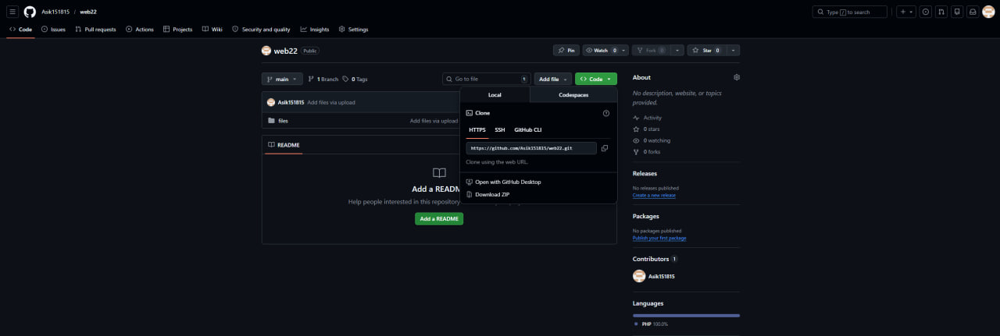
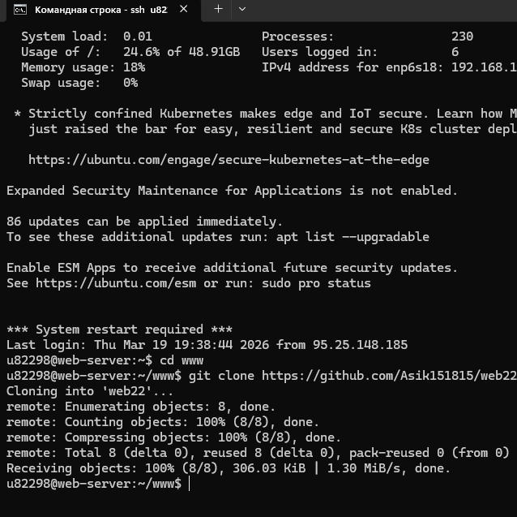
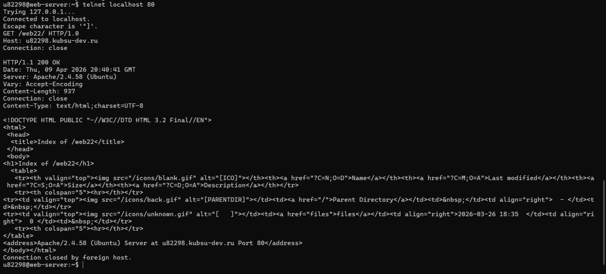
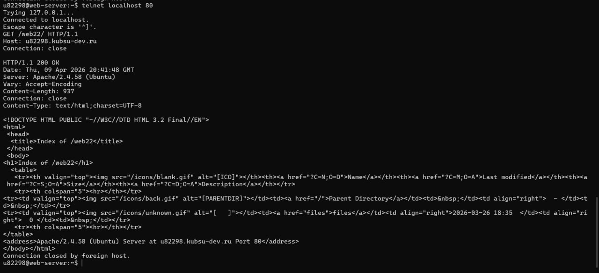
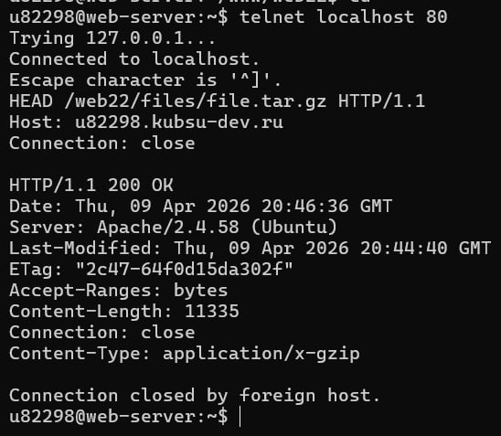
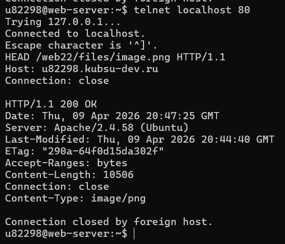
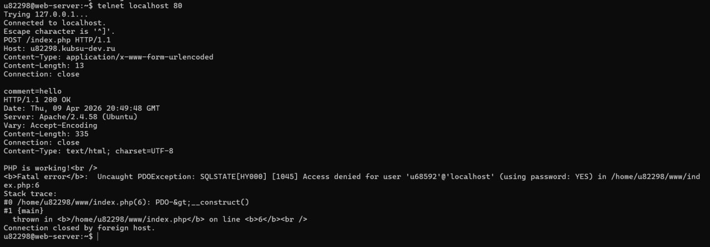
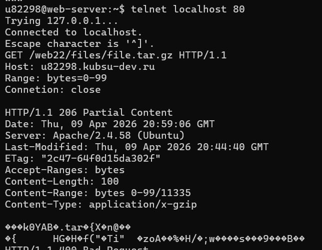
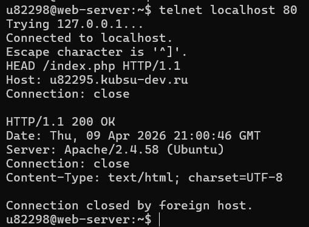

Файлы (file.tar.gz, image.png и пр.) были добавлены в репозиторий GitHub, после чего опубликованы на веб-сервере внутри каталога /BackendTask2/files. Доступность этих файлов проверена через браузер с использованием учебного домена.


Был отправлен GET-запрос к основной странице сервера, используя версию протокола HTTP/1.0.

Выполнен GET-запрос к служебной странице сайта с применением HTTP/1.1 и обязательным заголовком Host.

Через метод HEAD были получены только заголовки ответа сервера, где в поле Content-Length указан точный объём файла file.tar.gz.

Для определения Content-Type ресурса image.png был направлен HEAD-запрос.

С помощью telnet выполнен POST-запрос, отправляющий данные формы (application/x-www-form-urlencoded) на обработчик index.php.

Применён заголовок Range (bytes=0-99), чтобы получить начальные 100 байтов файла, избегая полной загрузки.

Кодировка страницы определена через HEAD-запрос по параметру charset в заголовке Content-Type.
